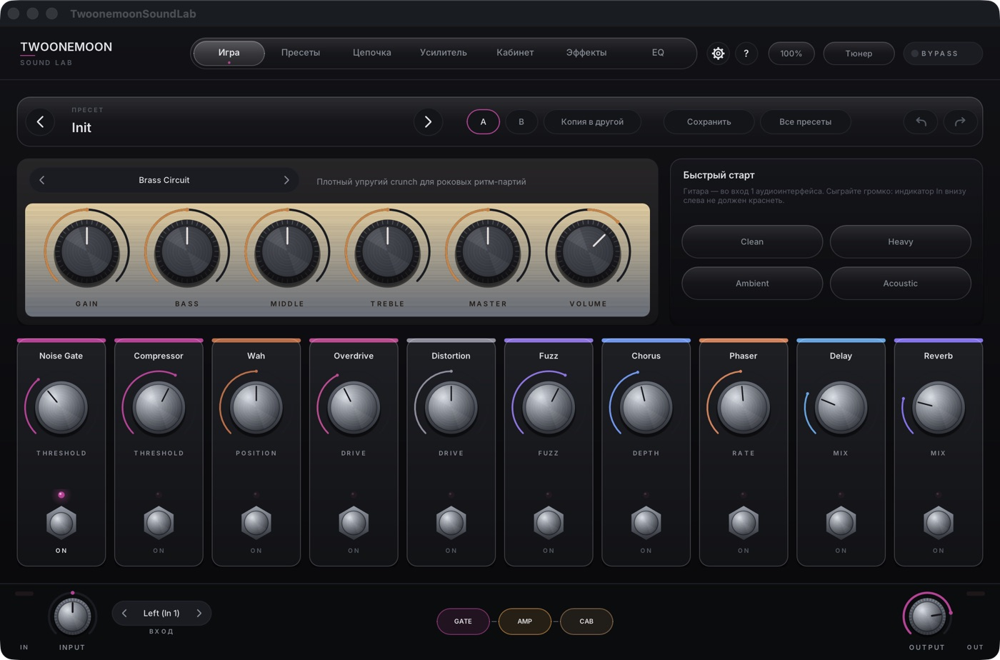

EMBEDDED / C++ / ASSEMBLY
twoonemoon
Семён ГридинSemyon GridinEmbedded-разработчикEmbedded developer
Я Семён. Пишу утилиты и тестовые программы для микроконтроллеров. Работаю в «Ангстреме»: C++, ассемблер, RTL-модели. В свободное время делаю гитарные плагины.I’m Semyon. I write utilities and test programs for microcontrollers at Angstrem, working with C++, assembly, and RTL models. In my spare time I make guitar plugins.
ОпытExperience
АО «Ангстрем» · ноябрь 2024 — сейчасAngstrem · November 2024 — present
По должности — инженер. По задачам — разработка инструментов и тестирование микроконтроллеров. Работаю в Linux/CentOS со средствами Cadence.My job title is engineer. My work is building tools and testing microcontrollers, using Cadence tools on Linux/CentOS.
МикроконтроллерыMicrocontrollers
Работаю с 8-разрядным микроконтроллером и участвую в разработке 32-разрядного. Пишу тесты для проверки функциональности, разбираю логи и участвую в отладке.I work with an 8-bit microcontroller and contribute to a 32-bit MCU. I write functional tests, analyse logs, and help debug programs.
Инструменты для RTL-тестовTools for RTL testing
Написал на C++ парсер: он переводит бинарные файлы после компиляции и линковки в текстовый формат для загрузки программы в RTL-модель микроконтроллера.I wrote a C++ parser that converts compiled and linked binaries into the text format used to load programs into an MCU’s RTL model.
Загрузчик на ассемблереAn assembly bootloader
В дипломе разработал программу начальной загрузки для 32-разрядного микроконтроллера с RISC-архитектурой. Писал на ассемблере под его систему команд.For my graduation project I developed a bootloader for a 32-bit RISC microcontroller, using assembly for its instruction set.
МИЭТ, бакалавриат, 2026. Проектирование и конструирование интегральных микросхем.MIET, bachelor’s degree, 2026. Integrated circuit design and engineering.
С чем работаюWhat I work with
- КодCode
- C++ · Assembly · C
- ИнтерфейсыInterfaces
- UART / USART · SPI · I2C
- ИнструментыTools
- Linux / CentOS · Cadence · Git / GitLab
- ЕщёAlso
- Python — учебные алгоритмы трассировки. Java / Spring Boot и C++ / JUCE / iPlug2 — свои проекты.Python for routing algorithms at university. Java / Spring Boot and C++ / JUCE / iPlug2 for personal projects.
Открытый кодOpen source
Здесь — то, что можно посмотреть на GitHub. Рабочие задачи описал выше; ниже — мои открытые проекты.Here is what you can explore on GitHub. The work experience is described above; these are my public projects.
C · 32-bit ISA · little-endian
Небольшой дизассемблер на C для нестандартной 32-битной архитектуры. Читает бинарник по четыре байта и дописывает названия инструкций. Неизвестные опкоды помечает как unknown.A small C disassembler for a custom 32-bit architecture. Reads four-byte words and annotates them with instruction names. Marks unrecognised opcodes as unknown.
Код и подробностиCode and detailsC++17 · iPlug2 · AUv2 / VST3 / CLAP
Делаю гитарный процессор для macOS на Apple Silicon: усилители, кабинеты и эффекты. Работает как плагин и отдельное приложение.I’m building a guitar processor for macOS on Apple Silicon: amps, cabinets, and effects. Runs as a plugin and a standalone app.
Пока тестовая версия. На реальной гитаре и вручную в DAW ещё не проверял.Still a test version. I haven’t tested it with a real guitar or manually in a DAW yet.
Код и подробностиCode and details
C++17 · JUCE · VST3 / AU
Гитарный дисторшн с noise gate, эквалайзером, загрузкой кабинетных IR и тюнером. Да, розовый.Guitar distortion with a noise gate, EQ, cabinet IR loading, and a tuner. Yes, it’s pink.
Код и подробностиCode and detailsЕщё два проекта на JavaTwo more Java projects
Сервис проверки транзакций из Kafka: проверяет сумму, отправляет алерт и сохраняет данные в PostgreSQL.A service that reads transactions from Kafka, checks the amount, sends alerts, and saves data in PostgreSQL.
Подбор фильмов по жанрам с высокими оценками пользователя. Уже оценённые фильмы исключаются из рекомендаций.Film recommendations based on the user’s highly rated genres, excluding films they have already rated.